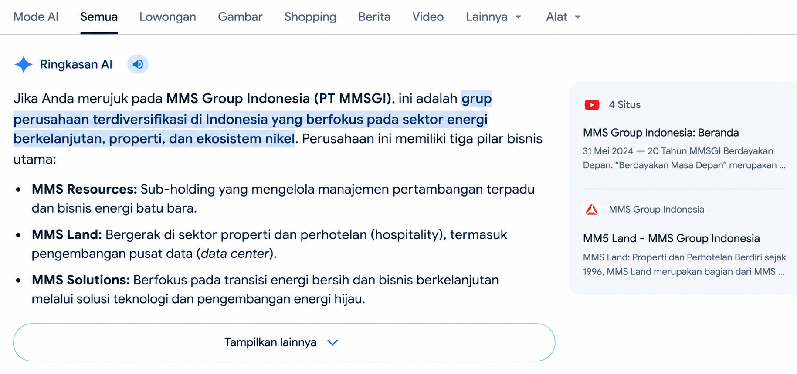
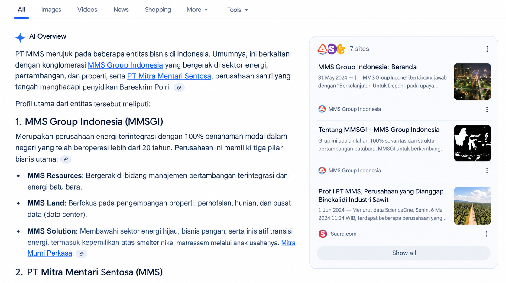

Search Behavior Has Undergone a Structural Paradigm Shift
AI-generated responses kini menjadi primary touchpoint konsumen - mendahului website visits, paid media, dan organic rankings. Brand yang tidak ter presentasi dalam AI citations kehilangan consideration stage secara sistematis.
9.5B
Gen AI Monthly Web Visits Global
+70% YoY
2.7B
Gen AI App Downloads (iOS + Android)
+134% YoY
95%
ChatGPT-Google Search User Overlap
Worldwide Mar-May 2026
69%
Search Sessions End Without a Website Click
Zero-click era
GEO VS SEO
A Paradigm Shift
Dari optimasi untuk crawler menjadi optimasi untuk LLM — tujuan
akhirnya bukan ranking, melainkan AI citation yang menghasilkan
konversi terukur.
Beyond Awareness:
From Relevant to Conversion
Perjalanan brand dari sekadar relevan di AI, menjadi sumber
kepercayaan yang mendorong konversi nyata.
Konten GEO-format membangun entity recognition di 4 platform AI.
AI merekomendasikan brand dengan narasi positif - lebih efektif dari paid media.
AI-referred users masuk dalam decision mode aktif. CVR 14.2% vs 2.8% organic.
Setiap citation memperkuat entity signals - compounding effect defensible moat.
Business Impact
AI referral traffic mengonversi 5.1x lebih tinggi dibanding trafik organik biasa.Three-Tier Engagement Model
Dirancang untuk progressive commitment - dari diagnostic assessment hingga full AI narrative ownership.
Comprehensive SEO & GEO Audit
One-time engagement. Baseline assessment untuk quantify current AI visibility gap.
Technical SEO & AI crawler audit
AI entity recognition assessment
Competitor citation benchmarking
Gap analysis & prioritized roadmap
Technical & On-Page Optimization
Systematic execution of SEO fundamentals sebagai foundation untuk GEO.
Core Web Vitals remediation (LCP <2.5s)
Schema markup implementation (JSON-LD)
AI crawler access configuration
Ilms.txt & entity consolidation
GEO & AI Search Optimization
Flagship engagement. Full AI narrative ownership di seluruh ekosistem AI.
GEO content production (editorial team)
Distribution: 15+ portals + social channels
Monthly citation tracking (4 platforms)
Retainer model - 4-month initial term
No lock-in beyond 4-month initial term - renewal driven purely by quantified outcomes.
AI-Powered Tools for Smarter GEO Execution
Satu ekosistem tools untuk mengidentifikasi visibility gap, mempercepat proses content creation, dan memonitor bagaimana brand direpresentasikan di berbagai platform AI.
GEO Content Audit
Tools yang dirancang untuk mengevaluasi kualitas content dari sisi technical readiness, topical depth, dan kemampuan content untuk dipahami oleh search engine maupun AI systems.
GEO Content Creator
Tools yang membantu tim editorial menghasilkan content yang lebih terstruktur, relevan, dan memiliki konteks yang kuat untuk search engine serta AI-generated responses.
GEO Monitoring
Memonitor visibility, brand coverage, dan perubahan citation dari berbagai prompt untuk memahami bagaimana brand muncul dan direpresentasikan di platform AI.
Implementation Timeline: 30 Days to First Signal
A structured execution roadmap designed to move from initial diagnostics to measurable AI visibility, citation growth, and performance-based continuation.
Diagnostic & Strategy
Technical audit, competitor citation mapping, AI entity assessment. Deliverable: GEO strategy document.
Technical & Content Activation
CWV remediation, schema implementation, first GEO content publication via Suara.com, entity mapping.
Initial Citation Detection
AI platforms begin indexing content. AI referral traffic appears in GA4. First prompt audit report delivered.
Citation Velocity & CVR Tracking
Citation rate accelerates. Share of AI Voice vs competitors quantified. CVR from AI referral attributed.
Performance-Based Continuation
Full KPI review. Renewal decision based purely on quantified outcomes - no lock-in beyond initial term.
Infrastructure is pre-built. No domain authority ramp-up required - Suara.com DA 68+ and existing AI citation history provide instant leverage that new GEO entrants cannot replicate.
Citation rate report (4 platforms)
Competitor Share of Voice analysis
Prompt audit: 30+ query samples
Gap analysis & next-month priorities
AI referral CVR attribution
Case Study: AI Narrative Management
Bagaimana GEO membantu membentuk kembali cara AI memahami dan merepresentasikan sebuah brand melalui struktur content dan entity yang lebih jelas.
Initial AI Representation

Masalah di awal adalah ketika user menggunakan keyword PT.MMS, maka AI Overview dan juga platform lain langsung mengarahkan ke PT.MMSGI walaupun kedua entitas tersebut berbeda.
Improved AI Narrative

Setelah artikel Suara.com dipublikasikan menggunakan format GEO, respons AI Overview berubah dan menunjukkan pemisahan entitas yang lebih jelas.
Setelah artikel Suara.com ter-publikasi menggunakan format GEO, respons AI Overview berubah menjadi menunjukkan bahwa “MMS” sendiri merujuk ke banyaknya entity berbeda sehingga tidak langsung menyimpulkan bahwa PT.MMS dan PT.MMSGI adalah entity yang sama.